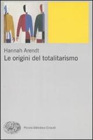
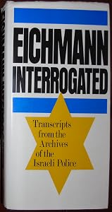
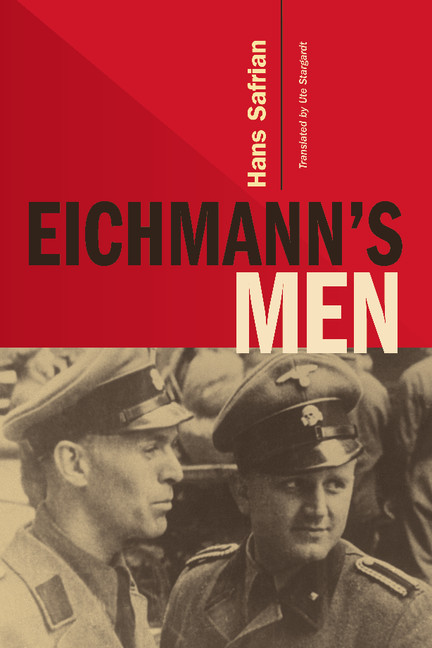
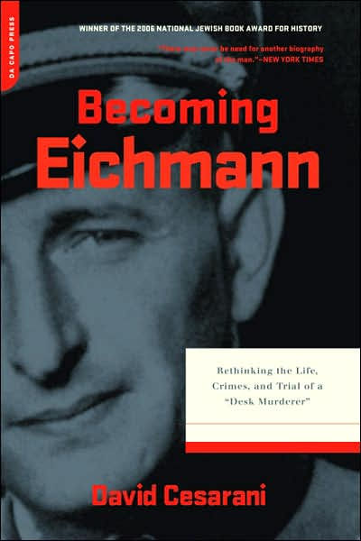
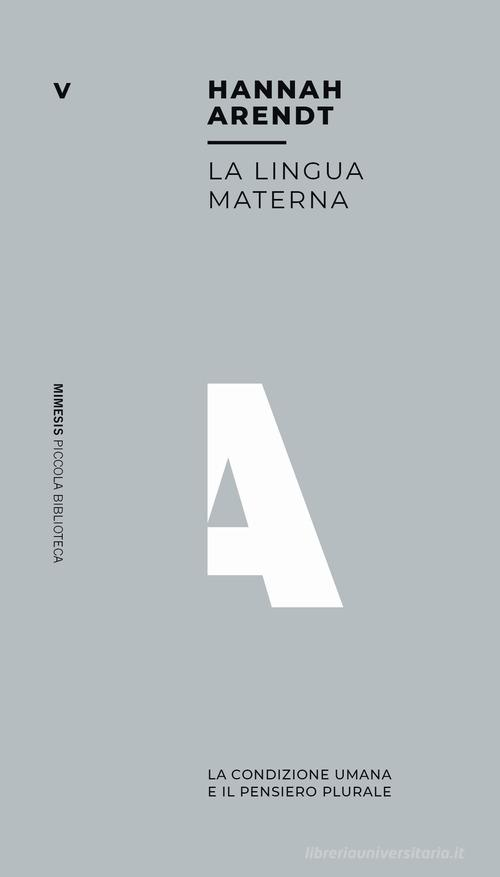
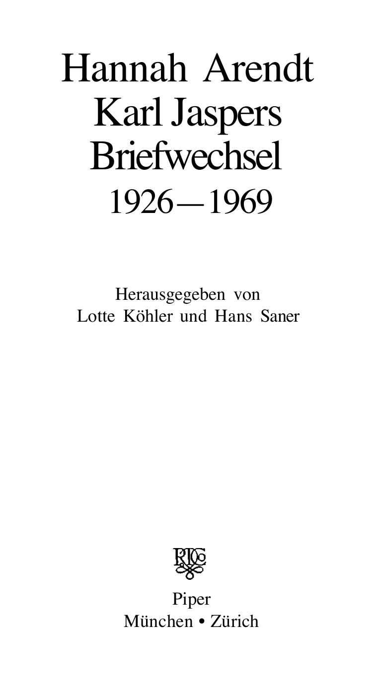
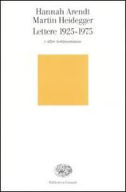
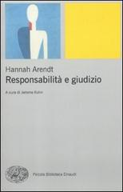
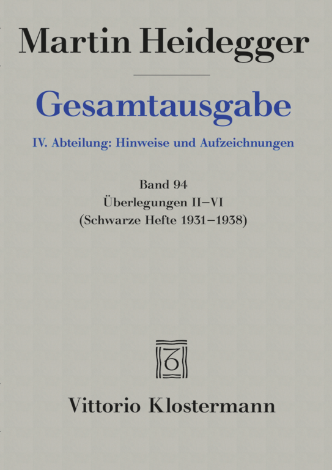
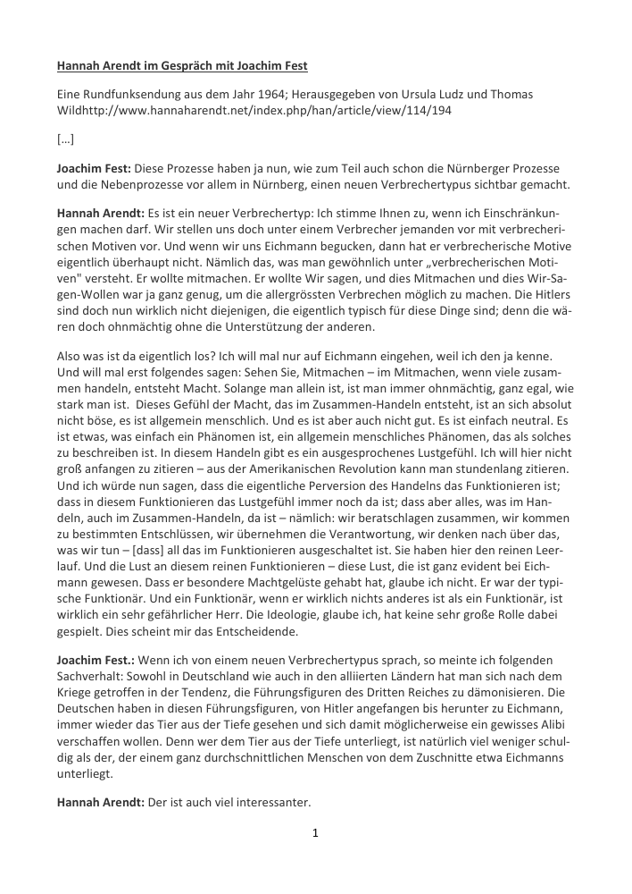

54:29 · 25 OPERE
Perché Hannah Arendt?
Il filo del discorso
Una richiesta del pubblico apre una critica alla fortuna culturale di Hannah Arendt. Il relatore confronta la sua ricezione con quella di Jean Améry, Bonhoeffer e altri autori, discute il reportage su Eichmann e propone letture storiche alternative. Il nucleo del contributo riguarda il legame fra scelta, responsabilità e conseguenze: la banalità del male viene contestata perché, nella interpretazione del relatore, rischierebbe di attenuare la responsabilità individuale. Seguono la controversia su Little Rock, il rapporto con Heidegger e due interviste del 1964, con Günter Gaus e Joachim Fest. Nella parte conclusiva pensiero, volontà e potere sono messi in relazione attraverso Schopenhauer, la Bibbia e Platone. La scheda conserva il dissenso argomentativo distinguendolo dalle accuse non dimostrate e confronta i passi citati con le fonti: la spiegazione arendtiana del comportamento di Eichmann non coincide con una richiesta di assoluzione.
I libri nel discorso

Intellettuale a Auschwitz
Copertina: Bollati Boringhieri · Varianti · 2011 · traduzione di Enrico Ganni
Immagine autentica dell’opera, controllata visivamente; l’edizione di riferimento non è attribuita al filmato.
Améry e il volume sull’intellettuale ad Auschwitz; titolo originale Jenseits von Schuld und Sühne a1595.
Passaggio 1:05 ↗ · Fonti e libro ↗
Dialettica dell’illuminismo
Identificazione probabile
Copertina: Einaudi, Piccola Biblioteca Einaudi, 2010
Edizione illustrativa dell'opera, con traduzione di Renato Solmi e introduzione di Carlo Galli; non identificata nel video.
Kulturindustrie, Aufklärung als Massenbetrug: capitolo identificato nella Dialettica dell’illuminismo.
Passaggio 2:35 ↗ · Fonti e libro ↗Tra passato e futuro (Between Past and Future)
Copertina: Originale inglese del 1961, poi ampliato. Edizione italiana Garzanti 1991, introduzione di Alessandro Dal Lago, traduzione di Tania Gargiulo, 309 pagine. Copertina associata all’ISBN 9788811674627 delle ristampe Garzanti: i cataloghi riportano anni diversi e Braidense specifica una stampa 2011. La tiratura fotografata non è stabilita.
Immagine autentica dell’opera, controllata visivamente; l’edizione di riferimento non è attribuita al filmato.
Tra passato e futuro, prefatore Alessandro Dal Lago, Garzanti 1991.
Passaggio 3:17 ↗ · Fonti e libro ↗
Le origini del totalitarismo (The Origins of Totalitarianism)
Copertina: Originale inglese del 1951; versione tedesca Elemente und Ursprünge totaler Herrschaft del 1955. Copertina Einaudi, Piccola Biblioteca Einaudi 459, 2009, traduzione di Amerigo Guadagnin, introduzione di Alberto Martinelli e saggio di Simona Forti, LXXXII e 710 pagine, ISBN 9788806200640.
Immagine autentica dell’opera, controllata visivamente; l’edizione di riferimento non è attribuita al filmato.
Le origini del totalitarismo,1951, e versione tedesca.
Passaggio 4:24 ↗ · Fonti e libro ↗
La banalità del male. Eichmann a Gerusalemme
Copertina: Feltrinelli · Universale Economica Saggi · 2023
Immagine autentica dell’opera, controllata visivamente; l’edizione di riferimento non è attribuita al filmato.
Arendt, resoconto del processo Eichmann e banalità del male, discussi ripetutamente.
Passaggio 4:43 ↗ · Fonti e libro ↗Hannah Arendt
Identificazione probabile
Manifesto del film · distribuzione Zeitgeist: Film del 2012, regia di Margarethe von Trotta, con Barbara Sukowa, 113 minuti nel catalogo Zeitgeist. Manifesto autentico della distribuzione statunitense, uscita nel 2013, distinto da una copertina libraria o da un documento del processo.
Manifesto ufficiale con titolo, regista e interpreti. Il ritratto è della interprete Barbara Sukowa nel ruolo di Arendt, non una fotografia storica della filosofa.
Film sulla Arendt, titolo e regista non pronunciati: identificazione probabile con il film 2012.
Passaggio 5:10 ↗ · Fonti e libro ↗
1984
Copertina: Newton Compton · edizione illustrativa
O’Brien, Winston Smith e 1984 espliciti.
Passaggio 6:41 ↗ · Fonti e libro ↗
Noi figli di Eichmann. Lettera aperta a Klaus Eichmann
Copertina: Giuntina, 1995, traduzione di Antonio G. Saluzzi.
Immagine autentica dell’opera, controllata visivamente; l’edizione di riferimento non è attribuita al filmato.
Günther Anders, Wir Eichmanns Söhne / Noi figli di Eichmann.
Passaggio 7:46 ↗ · Fonti e libro ↗
Eichmann Interrogated: Transcripts from the Archives of the Israeli Police
Edizione inglese Bodley Head 1983 · copia illustrativa diversa da quella mostrata: Fotografia dell’edizione inglese Eichmann Interrogated: Transcripts from the Archives of the Israeli Police, The Bodley Head, Londra 1983, ISBN 0370305167 / 9780370305165. A cura di Jochen von Lang con Claus Sibyll, traduzione Ralph Manheim, introduzione Avner W. Less: dati verificati nel catalogo Wellcome. Esemplare Hanselled Books, copertina bianca con bande azzurre e stella gialla. Stessa opera e traduzione, ma grafica diversa dalla copia mostrata nel video: immagine illustrativa, senza identificare editore, anno o tiratura di quella copia.
Nel fotogramma del filmato si vede una copertina in inglese con ritratto fotografico e grandi lettere nere; titolo e responsabilità editoriali sono leggibili, editore/anno/ISBN non lo sono. Non si attribuisce al relatore la Bodley Head 1983 illustrata qui né la ristampa Da Capo 1999. Non Il verbale italiano o un’altra raccolta di confessioni.
Il parlato nella trascrizione automatica a 533.96–551.91 s dice questo e lo presenta come trascrizione degli interrogatori. Il titolo non è pronunciato: nel fotogramma locale nativo a 539 s si leggono EICHMANN INTERROGATED: TRANSCRIPTS FROM THE ARCHIVES OF THE ISRAELI POLICE, a cura di Jochen von Lang con Claus Sibyll, traduzione Ralph Manheim e introduzione Avner W. Less.
Passaggio 8:59 ↗ · Fonti e libro ↗
Eichmann’s Men
Copertina: Edizione inglese Cambridge University Press, in collaborazione con United States Holocaust Memorial Museum, traduzione di Ute Stargardt, ISBN 9780521617260. Il catalogo del tascabile indica 21 dicembre 2009, la recensione Cambridge 2010: la differenza è conservata. La recensione descrive VII e 317 pagine; altri cataloghi commerciali indicano 328 complessive. Copertina autentica dal servizio editoriale Cambridge.
Immagine autentica dell’opera, controllata visivamente; l’edizione di riferimento non è attribuita al filmato.
Safrian reso come Safran e libro sugli uomini di Eichmann.
Passaggio 9:22 ↗ · Fonti e libro ↗
Becoming Eichmann: Rethinking the Life, Crimes, and Trial of a “Desk Murderer”
Copertina: Originale britannico Eichmann: His Life and Crimes, Heinemann, 2004; edizione statunitense Becoming Eichmann, Da Capo, 2006. Copertina del tascabile Da Capo del 24 aprile 2007, 472 pagine, ISBN 9780306815393. Il sito corrente Hachette lo colloca nel proprio catalogo Grand Central, ma la copertina conserva il marchio Da Capo Press.
Immagine autentica dell’opera, controllata visivamente; l’edizione di riferimento non è attribuita al filmato.
Cesarani, Becoming Eichmann.
Passaggio 9:29 ↗ · Fonti e libro ↗
Che cosa resta? Resta la lingua materna (Was bleibt? Es bleibt die Muttersprache)
Raccolta La lingua materna · contiene il colloquio con Gaus: Zur Person, trasmissione del 28 ottobre 1964. Immagine della raccolta La lingua materna. La condizione umana e il pensiero plurale, a cura di Alessandro Dal Lago, Mimesis, terza edizione 2019, 112 pagine, ISBN 9788857556338. È una raccolta italiana di interviste, non la copertina di una registrazione del 1964.
Copertina autentica della raccolta Mimesis, riscontrata visivamente e nel catalogo nazionale. La traduzione italiana citata oralmente non è attribuita a questa specifica edizione.
Intervista a Gaus del 1964; processo del pensiero e teoria politica.
Passaggio 24:25 ↗ · Fonti e libro ↗
Carteggio 1926–1969. Filosofia e politica (Briefwechsel 1926–1969)
Identificazione probabile
Frontespizio originale Piper, distinto dalla copertina Feltrinelli 1989: Piper · frontespizio del carteggio tedesco integrale · edizione non databile dalla sola anteprima
Prima pagina autentica dell’anteprima bibliotecaria di 13 pagine: titolo, autori, curatori Lotte Köhler/Hans Saner e marchio Piper. La raccolta tedesca è più ampia della selezione italiana; la corrispondenza integrale dei contenuti e l’edizione precisa del video non sono accertate. Anno e ISBN dell’esemplare illustrato non sono desunti da un catalogo di ristampa diverso. Non è una copertina italiana.
Arendt, Jaspers e volume della loro corrispondenza sono espliciti; titolo ed edizione non precisati. Identificazione probabile del carteggio 1926–1969, distinguendo selezione italiana e corpus tedesco.
Passaggio 25:36 ↗ · Fonti e libro ↗
Lettere 1925–1975 e altre testimonianze
Identificazione probabile
Copertina: Edizione italiana a cura e con traduzione di Massimo Bonola, dai lasciti ordinati da Ursula Ludz, Einaudi, Biblioteca Einaudi 237, 315 pagine e tavole, ISBN 9788806189976. Braidense registra 2007; il catalogo Einaudi 2015 associa al titolo 2001: non si attribuisce una tiratura certa alla copertina.
Immagine autentica dell’opera, controllata visivamente; l’edizione di riferimento non è attribuita al filmato.
Carteggio e relazione con Heidegger: titolo non pronunciato.
Passaggio 32:50 ↗ · Fonti e libro ↗
Reflections on Little Rock (Riflessioni su Little Rock)
Identificazione probabile
Raccolta Responsabilità e giudizio · contiene il saggio su Little Rock: Scritto nel contesto di Little Rock e pubblicato in Dissent, inverno 1959. L’immagine è della raccolta Responsabilità e giudizio, a cura di Jerome Kohn, traduzione di Davide Tarizzo, Einaudi 2010, XXXI e 238 pagine, ISBN 9788806205621, che contiene il saggio. Non è una pubblicazione autonoma o la copertina della rivista del 1959.
Copertina autentica della raccolta italiana Einaudi; la presenza del saggio è riscontrata nell’indice editoriale. Non si attribuisce al filmato questa edizione.
Saggio sui fatti di Little Rock, autrice e episodio espliciti; titolo non ricordato.
Passaggio 31:07 ↗ · Fonti e libro ↗
Ormai solo un Dio ci può salvare. Intervista con lo «Spiegel»
Copertina: Guanda, Piccola biblioteca, 9 giugno 2023, a cura di Alfredo Marini, 176 pagine; ISBN 9788823524217. Intervista a Rudolf Augstein e Georg Wolff del 23 settembre 1966, pubblicazione postuma su Der Spiegel del 31 maggio 1976.
Copertina autentica Guanda con titolo, autore, curatore e ritratto. La citazione nel video non prova l’uso della ristampa del 2023; il richiamo conclusivo non è una sintesi dell’intera intervista.
Intervista allo Spiegel, Solo un Dio ci può salvare.
Passaggio 33:55 ↗ · Fonti e libro ↗
Quaderni neri (Schwarze Hefte)
Copertina di un volume del corpus: GA 94: Immagine di riferimento: Gesamtausgabe 94, Überlegungen II–VI (Schwarze Hefte 1931–1938), a cura di Peter Trawny, Klostermann 2014, VI e 536 pagine, ISBN 9783465038153. La voce riguarda il corpus, la cui pubblicazione è iniziata nel 2014; non tutti i quaderni sono contenuti in GA 94.
Copertina autentica Klostermann vista integralmente: fondo grigio, Martin Heidegger, Gesamtausgabe in blu, Band 94 e titolo Überlegungen II–VI, Schwarze Hefte 1931–1938. Rappresenta soltanto il primo volume pubblicato del corpus; non si attribuisce al relatore la citazione specifica di GA 94.
Schwarze Hefte, Quaderni neri, espliciti senza volume determinato.
Passaggio 34:14 ↗ · Fonti e libro ↗
Il mondo come volontà e rappresentazione
Copertina: Newton Compton · edizione di riferimento
Schopenhauer e i due volumi del Mondo, letti da Nietzsche.
Passaggio 40:03 ↗ · Fonti e libro ↗
Critica della ragione pura
Identificazione probabile
Copertina: Adelphi · Gli Adelphi 85, 1995 · traduzione e cura Giorgio Colli
Immagine autentica dell’opera, controllata visivamente; l’edizione di riferimento non è attribuita al filmato.
L’io penso kantiano: probabile riferimento alla Critica della ragione pura senza titolo pronunciato.
Passaggio 39:50 ↗ · Fonti e libro ↗
Bibbia
Copertina: San Paolo, 2014 · Nuova Versione dai Testi Antichi · edizione di riferimento
Il serpente nel giardino e sarete come dei; Giobbe, dove eri quando creavo; bambini nei Vangeli a3163.
Passaggio 42:11 ↗ · Fonti e libro ↗
Il trionfo della volontà (Triumph des Willens)
Fotografia archivistica del film: Il trionfo della volontà: Fotografia archivistica della scena di Norimberga, galleria DFF/filmportal, fonte DFM. Non è una copertina libraria né una locandina.
Immagine della scena di Norimberga conservata nella galleria museale del film, con fonte DFM. Usata come documento storico del film di propaganda; non è la copertina di un libro o una locandina.
Triumph des Willens, Leni Riefenstahl e raduno di Norimberga.
Passaggio 42:40 ↗ · Fonti e libro ↗Gli uomini vengono da Marte, le donne da Venere (Men Are from Mars, Women Are from Venus)
Copertina: Originale del 1992. Copertina BUR Gatti blu, Rizzoli, 11 gennaio 2022, traduzione di Maria Barbara Piccioli, 336 pagine, ISBN 9788817160995. È il volume di base, distinto dai successivi libri sullo stress o sulla stessa metafora Marte–Venere.
Immagine autentica dell’opera, controllata visivamente; l’edizione di riferimento non è attribuita al filmato.
Men Are from Mars, Women Are from Venus, titolo tradotto in italiano.
Passaggio 44:16 ↗ · Fonti e libro ↗Vita activa. La condizione umana (The Human Condition)
Copertina: Originale The Human Condition, 1958. Copertina Bompiani, Tascabili Saggistica, settembre 2017, introduzione di Alessandro Dal Lago, traduzione di Sergio Finzi, 448 pagine, ISBN 9788845295461. La immagine di riferimento non viene attribuita alla copia letta dal relatore.
Immagine autentica dell’opera, controllata visivamente; l’edizione di riferimento non è attribuita al filmato.
Vita activa e potere che nasce tra chi agisce insieme.
Passaggio 47:07 ↗ · Fonti e libro ↗
Hannah Arendt im Gespräch mit Joachim Fest
Prima pagina della trascrizione per estratti: Colloquio radiofonico del 1964; prima pagina di una trascrizione pubblica per estratti.
Prima pagina della trascrizione pubblicata dalla Stadtakademie München, quattro pagine con omissioni dichiarate, che indica l’edizione di Ursula Ludz e Thomas Wild. Il passo su Kant è alla pagina 3. Non è una copertina libraria né la trascrizione integrale del colloquio; nessuna edizione a stampa è attribuita al video.
Joachim Fest, intervista 1964, lungo passo sul bene come tentazione.
Passaggio 48:42 ↗ · Fonti e libro ↗
La Repubblica
Copertina: Laterza · La Repubblica · edizione con testo a fronte di riferimento
Immagine associata all’ISBN di riferimento e controllata visivamente; edizione e traduzione non identificate come quelle citate o lette nel video.
Trasimaco e la Repubblica, utile del più forte.
Passaggio 53:49 ↗ · Fonti e libro ↗